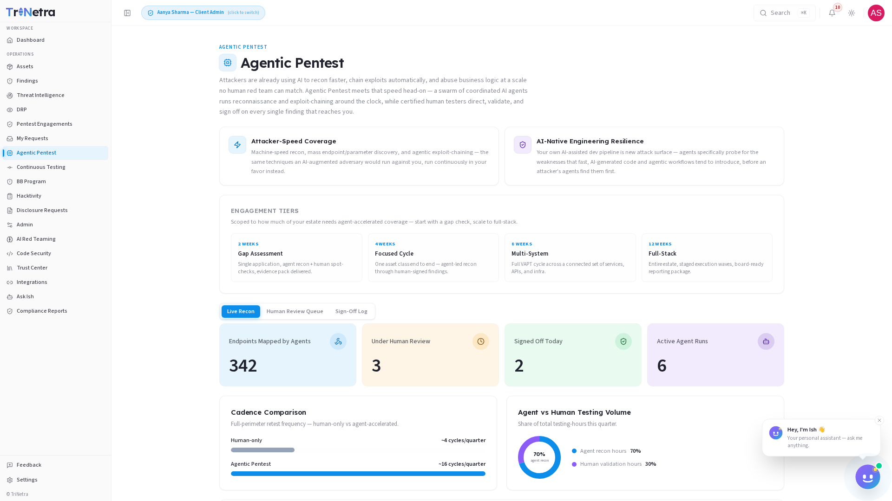

Agentic Pentest
Agentic Pentest
Availability: Agentic Pentest is a platform-gated module. You will only see Agentic Pentest in the sidebar if your organisation is onboarded for it. If it is not there, your org is not subscribed to Agentic Pentest — speak to your CSM.
1. What Agentic Pentest is and why it matters
Agentic Pentest is TriNetra's AI-driven penetration testing module. A swarm of coordinated AI agents runs reconnaissance and exploit-chaining around the clock, while certified human testers direct, validate, and sign off on every single finding before it reaches you.
Attackers are already using AI to recon faster, chain exploits automatically, and abuse business logic at a scale no human red team can match. Agentic Pentest meets that speed head-on — machine-speed testing that surfaces real, validated findings your team can act on, with the assurance that a human expert has reviewed and signed off every one.
For a client, Agentic Pentest is a read-only intelligence feed scoped to your own organisation. SecurityBoat runs the agentic testing campaigns; you consume the live recon feed, the human-validated findings, and the full sign-off audit trail.
Two principles govern the module:
- No finding reaches a client without a human signature. Every finding surfaced by AI agents passes through mandatory human review — a certified tester validates it, assigns a severity, and signs off before it appears in your Findings list.
- AI-native resilience. Your own AI-assisted development pipeline is new attack surface. The agents specifically probe for the weaknesses that fast, AI-generated code and agentic workflows tend to introduce, before an attacker's agents find them first.
2. What each client role can do
| Action | Client Admin | Client TPM | Client Viewer |
|---|---|---|---|
| View the Live Recon dashboard, recon feed, and findings | ✅ | ✅ | ✅ |
| View the Human Review Queue and Sign-Off Log | ✅ | ✅ | ✅ |
| Request a new agentic pentest engagement | ✅ | ❌ | ❌ |
| Run agentic campaigns or configure testing parameters | ❌ | ❌ | ❌ |
Why clients do not run campaigns directly: agentic testing is an active, AI-orchestrated operation with real-world impact on target systems. SecurityBoat staff own the campaign configuration and execution. A Client Admin can request a new engagement; staff scope, configure, and launch the campaign.
Navigation
Click Agentic Pentest in the main sidebar menu. It has three tabs: Live Recon, Human Review Queue, and Sign-Off Log.

3. Engagement Tiers
Agentic Pentest engagements are offered in four tiers, each designed for a different testing depth and duration:
| Tier | Duration | Scope | Best for |
|---|---|---|---|
| Gap Assessment | 2 weeks | Quick triage of critical surfaces | Teams needing a rapid risk snapshot between major engagements |
| Focused Cycle | 4 weeks | Deep-dive on a single system or application | Newly deployed applications or post-major-release testing |
| Multi-System | 8 weeks | Coordinated testing across multiple interconnected services | Service-oriented architectures with inter-service trust boundaries |
| Full-Stack | 12 weeks | End-to-end assessment covering all layers | Comprehensive annual testing or pre-audit readiness |
A Client Admin can request any tier through the My Requests page. Staff will confirm scope, targets, and schedule before the campaign begins.
4. Live Recon Tab
The Live Recon tab is your real-time window into active agentic testing. Unlike a traditional pentest where you wait weeks for a report, you see discoveries as they surface.
Metrics summary — what each number means:
| Metric | Meaning | Why it matters |
|---|---|---|
| Endpoints Mapped by Agents | Total unique endpoints the agents have discovered and catalogued | Breadth of coverage — how much of your surface the agents have seen |
| Under Human Review | Findings currently in the review queue awaiting tester validation | Pipeline health — how many discoveries are pending sign-off |
| Signed Off Today | Findings validated and signed off by a human tester in the current day | Throughput — how quickly validated intelligence reaches you |
| Active Agent Runs | Number of agent campaigns currently executing | Testing velocity — how many concurrent testing streams are active |
Cadence Comparison: A chart compares traditional human-only testing cadence (~4 cycles per quarter) against Agentic Pentest cadence (~16 cycles per quarter), showing the velocity uplift that continuous AI-driven testing provides.
Agent vs Human Testing Volume: A breakdown showing the split between agent reconnaissance (approximately 70% of testing volume) and human validation (approximately 30%). The agents do the heavy lifting of discovery; human testers focus their expertise on validation and sign-off.
Agent Discovery Feed: A live-streaming feed of discoveries the agents are making in real time. Each entry shows the endpoint, the nature of the finding, and its current status — surfaced, under review, or signed off. This feed is the fastest way to understand what your active campaigns are uncovering right now.
5. Human Review Queue
The Human Review Queue is where AI-surfaced findings go through mandatory human review before reaching you. This is the quality gate that ensures every finding you receive has been validated by a certified tester.
The review process for each finding follows three required steps:
- Review and validate — a certified tester examines the finding, confirms it is not a false positive, and verifies the evidence.
- Assign severity — the tester assigns a severity rating (Critical, High, Medium, Low, or Informational) based on impact and exploitability.
- Sign off — the tester signs the finding, which moves it from the queue into your Findings list.
Only after all three steps are complete does a finding appear in your Findings module. Until sign-off, findings remain in the review queue and are not visible to clients.
Why this matters: AI agents are fast but imperfect — they can surface false positives or misjudge severity. The human review queue ensures that what reaches you is real, validated, and prioritised correctly.
6. Sign-Off Log
The Sign-Off Log provides a complete, immutable audit trail of every finding that has passed through human review. It answers the question: who vouched for this finding, and when?
Each entry in the Sign-Off Log shows:
- Finding title — the validated vulnerability
- Severity — the assigned rating after human review
- Reviewed by — the certified tester who validated and signed off
- Signed off on — date and time of sign-off
- Status — whether the finding is open, in remediation, or closed
The Sign-Off Log is read-only for all client roles. It serves as your assurance that every finding in your queue carries a human signature, and it provides the audit trail needed for compliance and governance reporting.
7. How Agentic Pentest connects to the rest of the platform
Agentic Pentest findings flow into the unified Findings module (source =
Agentic Pentest), so an AI-discovered vulnerability is triaged and remediated
the same way as any other pentest finding:
- Findings — signed-off findings appear in your Findings list with full evidence and reproduction steps.
- My Requests — Client Admins use this page to request new agentic pentest engagements.
- Feedback — if a finding lacks sufficient evidence or reproduction steps, use the Feedback module to flag it.
- Compliance Reports — agentic pentest findings are included in your compliance reporting alongside findings from other testing sources.
Best practices
- Monitor the Live Recon feed regularly — discoveries appear in real time; early awareness of a critical finding can shorten your time to remediation.
- Act on critical findings promptly — SLAs are measured from sign-off, not from discovery. Once a finding is validated and signed off, your remediation clock starts.
- Request retests through My Requests — when remediation is complete, submit a retest request so the agents can verify the fix.
- Use the Feedback module for quality issues — if a signed-off finding appears to be a false positive or lacks sufficient evidence, report it through Feedback rather than ignoring it.
- Layer agentic pentesting with ASM — ASM provides always-on breadth between engagements; Agentic Pentest provides AI-speed depth during active campaigns. Together they give continuous coverage of both surface and depth.
Troubleshooting
| Symptom | Cause / Fix |
|---|---|
| No "Agentic Pentest" in the sidebar | Your org is not subscribed to Agentic Pentest. Contact your CSM. |
| Cannot request a new engagement | You are Client TPM or Client Viewer (read-only). Ask a Client Admin to submit the request. |
| Live Recon tab shows no activity | No active agentic campaign is running for your organisation. A Client Admin can request one through My Requests. |
| Findings appear slowly | All findings go through mandatory human review before reaching you — this is by design. Check the Human Review Queue for pipeline status. |
| A finding in the Sign-Off Log seems incorrect | Use the Feedback module to flag it with details — do not ignore it. |
← Previous: Disclosure Requests | Next: Continuous Testing →